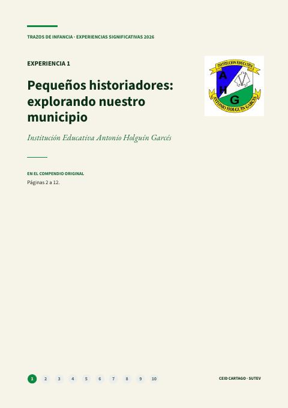
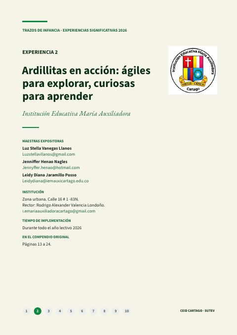
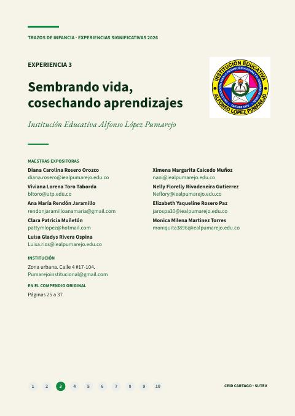
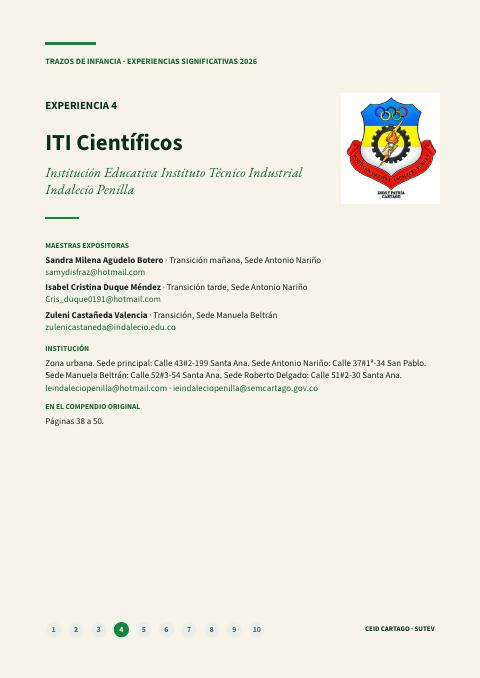
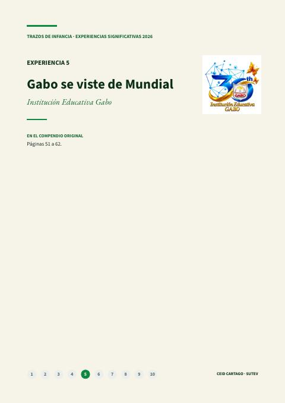
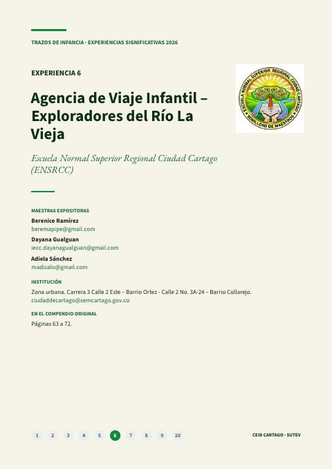
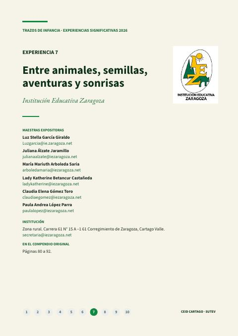
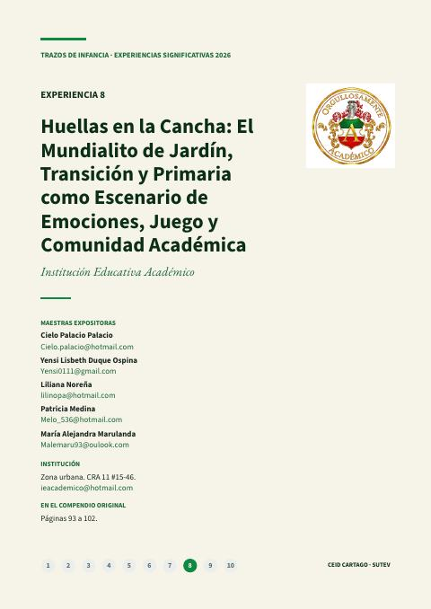
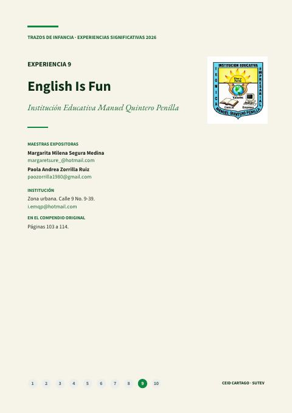
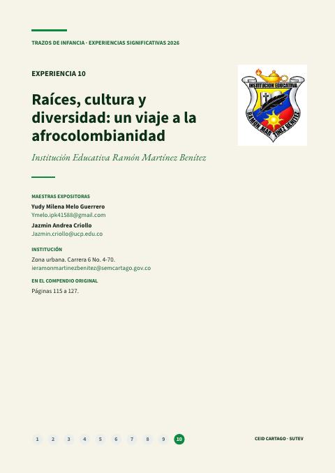

Experiencias
Experiencias pedagógicas alternativas (EPA) de los docentes del territorio: las del Congreso Pedagógico y los relatos de aula de la revista.
 EPAReconocimiento a las ocho EPA del Norte del Valle para el 3.er Congreso Pedagógico NacionalReconocimiento del CEID Cartago a las ocho EPA del Norte del Valle curadas para el 3.er Congreso Pedagógico Nacional y a los docentes que las sostienen.4 de noviembre de 2026 · Toda la subdirectiva
EPAReconocimiento a las ocho EPA del Norte del Valle para el 3.er Congreso Pedagógico NacionalReconocimiento del CEID Cartago a las ocho EPA del Norte del Valle curadas para el 3.er Congreso Pedagógico Nacional y a los docentes que las sostienen.4 de noviembre de 2026 · Toda la subdirectivaMás en Experiencias
En la revista
16 artículos
Pág. 1 · 8 págs.Pequeños historiadores: explorando nuestro municipioMaestras de educación inicial de la Institución Educativa Antonio Holguín GarcésExperiencia significativa en educación inicial de la Institución Educativa Antonio Holguín Garcés, de Cartago, tal como la presentaron sus maestras en el compendio del colectivo Trazos de Infancia.Leer la experiencia →
Pág. 9 · 8 págs.Ardillitas en acción: ágiles para explorar, curiosas para aprenderLuz Stella Vanegas Llanos, Jenniffer Henao Nagles y Leidy Diana Jaramillo PossoExperiencia significativa en educación inicial de la Institución Educativa María Auxiliadora, de Cartago, tal como la presentaron sus maestras en el compendio del colectivo Trazos de Infancia.Leer la experiencia →
Pág. 17 · 9 págs.Sembrando vida, cosechando aprendizajesDiana Carolina Rosero Orozco, Viviana Lorena Toro Taborda, Ana María Rendón Jaramillo, Clara Patricia Muñetón, Luisa Gladys Rivera Ospina, Ximena Margarita Caicedo Muñoz, Nelly Florelly Rivadeneira Gutierrez, Elizabeth Yaqueline Rosero Paz y Monica Milena Martinez TorresExperiencia significativa en educación inicial de la Institución Educativa Alfonso López Pumarejo, de Cartago, tal como la presentaron sus maestras en el compendio del colectivo Trazos de Infancia.Leer la experiencia →
Pág. 26 · 10 págs.ITI CientíficosSandra Milena Agudelo Botero, Isabel Cristina Duque Méndez y Zuleni Castañeda ValenciaExperiencia significativa en educación inicial de la Institución Educativa Indalecio Penilla, de Cartago, tal como la presentaron sus maestras en el compendio del colectivo Trazos de Infancia.Leer la experiencia →
Pág. 36 · 11 págs.Gabo se viste de MundialMaestras de educación inicial de la Institución Educativa GaboExperiencia significativa en educación inicial de la Institución Educativa Gabo, de Cartago, tal como la presentaron sus maestras en el compendio del colectivo Trazos de Infancia.Leer la experiencia →
Pág. 47 · 7 págs.Agencia de Viaje Infantil – Exploradores del Río La ViejaBerenice Ramírez, Dayana Gualguan y Adiela SánchezExperiencia significativa en educación inicial de la Escuela Normal Superior Regional Ciudad Cartago, de Cartago, tal como la presentaron sus maestras en el compendio del colectivo Trazos de Infancia.Leer la experiencia →
Pág. 54 · 6 págs.Entre animales, semillas, aventuras y sonrisasLuz Stella García Giraldo, Juliana Álzate Jaramillo, María Mariuth Arboleda Saria, Lady Katherine Betancur Castañeda, Claudia Elena Gómez Toro y Paula Andrea López ParraExperiencia significativa en educación inicial de la Institución Educativa Zaragoza, de Cartago, tal como la presentaron sus maestras en el compendio del colectivo Trazos de Infancia.Leer la experiencia →
Pág. 60 · 7 págs.Huellas en la Cancha: El Mundialito de Jardín, Transición y Primaria como Escenario de Emociones, Juego y Comunidad AcadémicaCielo Palacio Palacio, Yensi Lisbeth Duque Ospina, Liliana Noreña, Patricia Medina y María Alejandra MarulandaExperiencia significativa en educación inicial de la Institución Educativa Académico, de Cartago, tal como la presentaron sus maestras en el compendio del colectivo Trazos de Infancia.Leer la experiencia →
Pág. 67 · 6 págs.English Is FunMargarita Milena Segura Medina y Paola Andrea Zorrilla RuizExperiencia significativa en educación inicial de la Institución Educativa Manuel Quintero Penilla, de Cartago, tal como la presentaron sus maestras en el compendio del colectivo Trazos de Infancia.Leer la experiencia →
Pág. 73 · 8 págs.Raíces, cultura y diversidad: un viaje a la afrocolombianidadYudy Milena Melo Guerrero y Jazmin Andrea CriolloExperiencia significativa en educación inicial de la Institución Educativa Ramón Martínez Benítez, de Cartago, tal como la presentaron sus maestras en el compendio del colectivo Trazos de Infancia.Leer la experiencia → Pág. 5 · 2 págs.Educación inicial con identidad territorial: una experiencia pedagógica alternativa que une a CartagoNatalia Córdoba ToroCómo maestras de preescolar unieron esfuerzos para transformar la educación inicial desde la identidad territorial y la construcción colectiva.Leer el artículo →
Pág. 5 · 2 págs.Educación inicial con identidad territorial: una experiencia pedagógica alternativa que une a CartagoNatalia Córdoba ToroCómo maestras de preescolar unieron esfuerzos para transformar la educación inicial desde la identidad territorial y la construcción colectiva.Leer el artículo → Pág. 7 · 2 págs.Sembrando futuro: ciencia, territorio y rebeldía ruralVíctor Manuel BetancurCómo una escuela rural transforma el aprendizaje al integrar agro, ciencia y tecnología para dignificar el territorio y proyectar futuro.Leer el artículo →
Pág. 7 · 2 págs.Sembrando futuro: ciencia, territorio y rebeldía ruralVíctor Manuel BetancurCómo una escuela rural transforma el aprendizaje al integrar agro, ciencia y tecnología para dignificar el territorio y proyectar futuro.Leer el artículo → Pág. 9 · 2 págs.ECOhilo: ciencia, conciencia y transformación desde el reciclajeErika Andrea Quintero García y Jhoan David Bermúdez CardonaCómo estudiantes convierten residuos plásticos en innovación científica, con conciencia ambiental, liderazgo juvenil y transformación sostenible desde la escuela.Leer el artículo →
Pág. 9 · 2 págs.ECOhilo: ciencia, conciencia y transformación desde el reciclajeErika Andrea Quintero García y Jhoan David Bermúdez CardonaCómo estudiantes convierten residuos plásticos en innovación científica, con conciencia ambiental, liderazgo juvenil y transformación sostenible desde la escuela.Leer el artículo → Pág. 11 · 2 págs.ConectaTE: escuela pública en resistencia científicaAlvaro Cardenas OrozcoCómo una escuela pública convirtió la ciencia y la tecnología en herramientas de emancipación.Leer el artículo →
Pág. 11 · 2 págs.ConectaTE: escuela pública en resistencia científicaAlvaro Cardenas OrozcoCómo una escuela pública convirtió la ciencia y la tecnología en herramientas de emancipación.Leer el artículo → Pág. 13 · 2 págs.Sendero interactivo: aprender caminando entre ciencia, naturaleza y comunidadMaría Sofía Vélez TasamaUn sendero donde la ciencia, la cultura y la naturaleza se encuentran para enseñar a cuidar el territorio y la vida.Leer el artículo →
Pág. 13 · 2 págs.Sendero interactivo: aprender caminando entre ciencia, naturaleza y comunidadMaría Sofía Vélez TasamaUn sendero donde la ciencia, la cultura y la naturaleza se encuentran para enseñar a cuidar el territorio y la vida.Leer el artículo → Pág. 15 · 3 págs.Laboratorio vivo: cuando la escuela aprende a cuidar el planetaJuan Camilo García BaronaCómo una escuela transforma el aprendizaje en acción ambiental y demuestra que educar también es aprender a cuidar el planeta.Leer el artículo →
Pág. 15 · 3 págs.Laboratorio vivo: cuando la escuela aprende a cuidar el planetaJuan Camilo García BaronaCómo una escuela transforma el aprendizaje en acción ambiental y demuestra que educar también es aprender a cuidar el planeta.Leer el artículo →